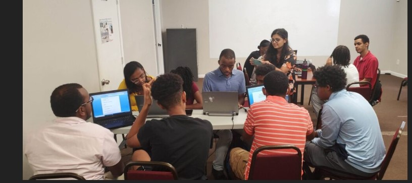
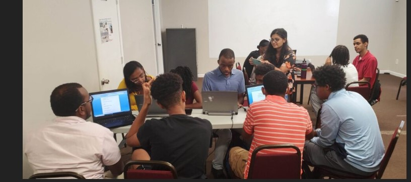

Jonathan Chekol
Audio Video Media Production Student at HCC
ResumeMy Portfolio
https://hcctimes.org/2023/05/ncaa-tournament-follow-up/
 
This was a photomontage assignemnt for my Principles of Film and Media Production that used composition to attract the viewer's attention while conveying a message, to download photographs from Creative Commons to combine and manipulate, using various techniques in Adobe in Photoshop.
and use the photos from Creative Commons correctly, according to the license of each one and attribute each one using the Title, Author, Source and License (TASL) method.

This was a photomontage assignemnt for my Principles of Film and Media Production that used composition to attract the viewer's attention while conveying a message, to download photographs from Creative Commons to combine and manipulate, using various techniques in Adobe in Photoshop.
and use the photos from Creative Commons correctly, according to the license of each one and attribute each one using the Title, Author, Source and License (TASL) method.

Portfolio
Jonathan Chekol is currently a junior at Howard Community College (HCC) majoring in Audio Video Media Production. He is a kind, friendly, highly organized person with attention to detail. Sports broadcasting has been a dream job for Jonathan since childhood. As a result, he has an in-depth knowledge of sports such as football, basketball and soccer. With a voice made for broadcasting, Jonathan hopes to make his career as a sports commentator. Jonathan worked last year for the Howard Community College (HCC) Athletics Department as a Multimedia Sports Communication Intern. In this capacity, he created game highlights, and promotional pictures for websites, coordinated with coaches to write profiles for individual student-athletes and other duties that were assigned to me by the manager of sports information. Chekol currently works for the HCC Times as a sports and campus profile writer. As a sports writer, he covers events that are going on nationally and on-campus and as a campus profile he covers different programs of the campus. Chekol is also concering a carrer in IT because of his proficient and knoweldge of technology particularly with Google, Microsoft and Adobe applications. Outside of sports projects, Chekol volunteers in his community. He volunteered in the Ethiopian Community Support Group in Olney, MD as a peer mentor. He helped with team building exercises, cleaned the property before and after an event. Jonathan has volunteered for Tsinat Institute in Silver Spring, MD, working with students with autism supporting them to interact in a positive and meaningful way. Chekol is currently a reading and writing tutor where he is assisting students to understand the text by giving context clues, reading comprehension questions and the end of unit tests.
Contact Me
Columbia, MD
Phone: 443-474-6076
Email:jonathanchekol@gmail.com
https://www.instagram.com/jonathanchekol/
https://www.linkedin.com/in/jonathan-chekol/
https://hcctimes.org/staff_name/jonathan-chekol/
https://www.youtube.com/@jonathanchekol/